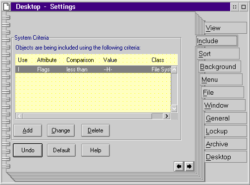

A container represents the standard mode to organize objects you work with. It simply stores objects and allows them to interact with the user. Sometimes, however, a container can contain unnecessary objects. For this reason, the Workplace Shell provides a powerful tool that allows you to filter objects you want to include in or to exclude from the container. You specify objects to be included in a container by selecting the Include tab of the Settings notebook. The filter for this container is specified by the criteria that tells the system to include, in the container, all objects that match the criteria. The default criteria is shown in the following figure:
I Flags less than --H-
This criteria means that all objects that do not have the hidden attribute set will be included in the Open view of the container. The following figure shows the Include dialog, which is set with the default criteria:
The Include dialog provides the following push buttons to manipulate criteria:
Push Button
As an example, to set the criteria to include nothing (exclude everything), delete the default criteria and add the criteria shown in the following figure:
E ObjectClass is equal to Object